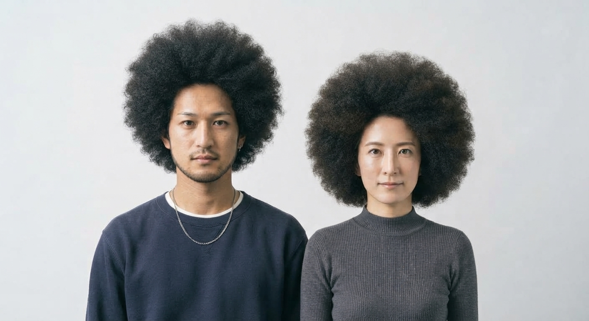
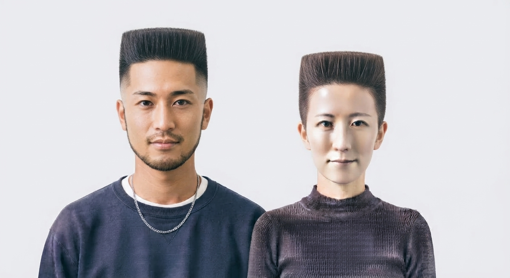

Asymmetric Cut（アシンメトリー）
Different lengths or designs on each side create an asymmetrical, modern look.
Select Style

Cornrows（コーンロウ）
Traditional tight braids braided close to the scalp in straight or geometric designs.
Select Style

Flat Top（フラットトップ）
A classic retro style where hair on top is trimmed flat with short sides.
Select Style
Twists（ツイスト）
Sections of hair twisted together to create textured, rope-like definition.
Select Style